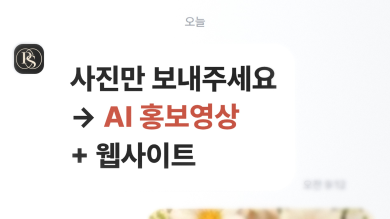
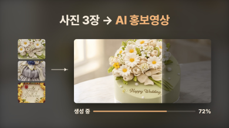
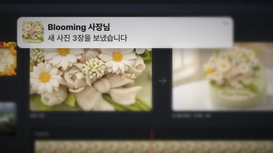
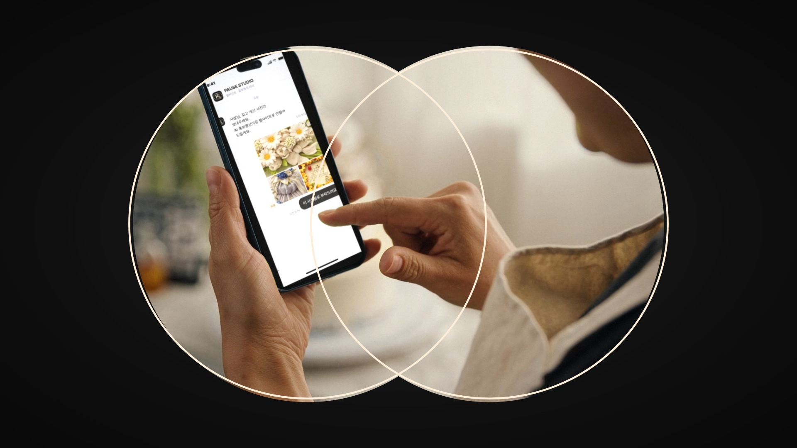
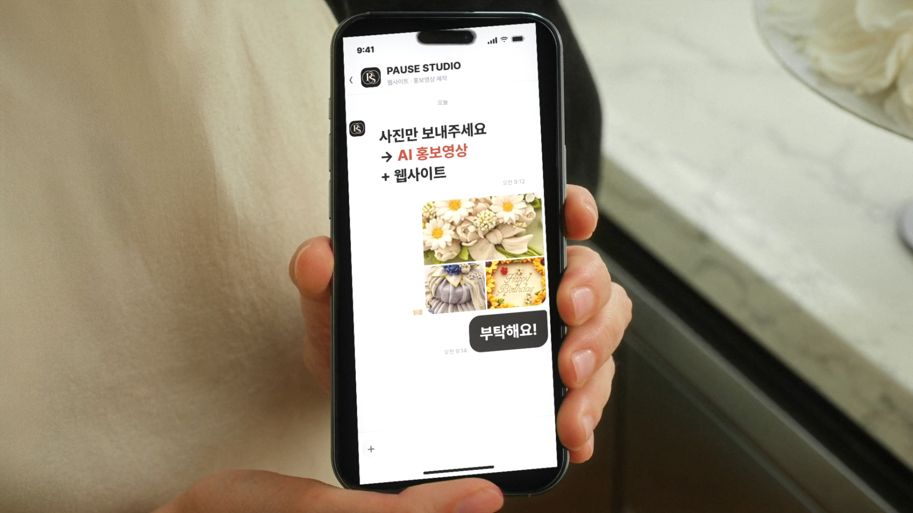
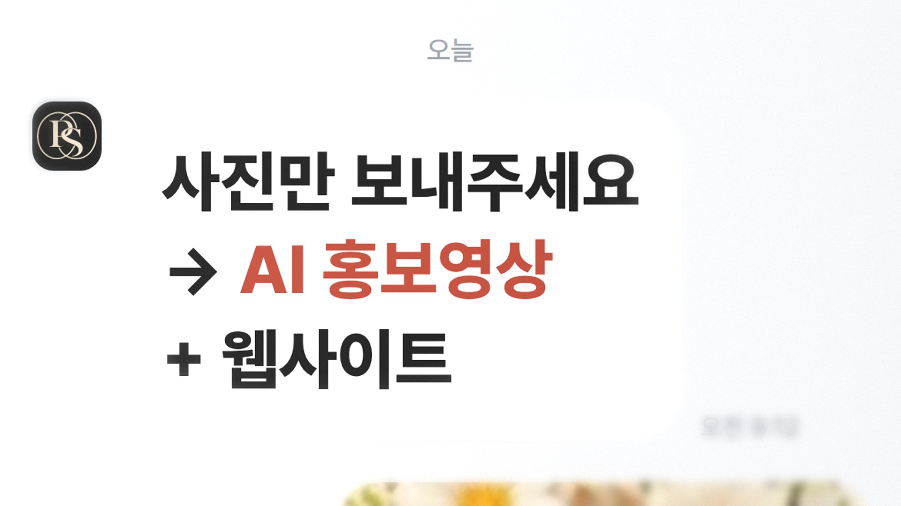
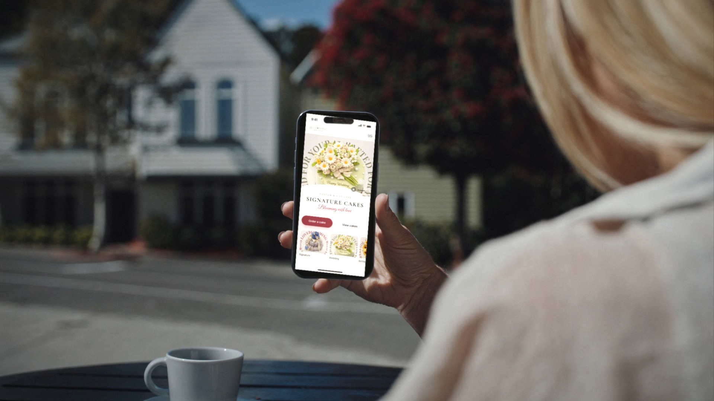

바뀐 점: 이야기를 전하는 세 순간(컷 1 채팅 · 컷 2 AI 홍보영상 · 컷 8 알림)은 카메라가 화면에 바짝 다가가거나 화면 전체를 쓰는 컷으로 — 글자를 크게(말풍선 약 3배, 제목 100px) · 실제 사이트에서 영상이 가장 작게 보이는 휴대폰 너비(390px)에서도 읽히는지 아래에서 확인 흐름: 사진 보내기 → AI 홍보영상 → 손님들(카페·집·작업장·유학원·동대문) → 작업실 알림 → 로고로 멈췄다 다시 시작 · 약 27초 무한 반복
실제 크기 확인 — 휴대폰으로 사이트를 볼 때 영상 너비(390px) 그대로

컷 1 클로즈업

컷 2 AI 홍보영상

컷 8 알림
루프 연결
0:25.5–0:26.5
끝 ①멈추며 색이 빠지고 로고의 두 원이 그려짐
0:26.5–27 / 0:00–0:01.5
끝 ② = 시작PAUSE STUDIO 로고 카드 — 마지막이자 첫 프레임

0:01.5–0:02.5
시작두 원이 렌즈처럼 커지며 컷 1
본편 8컷


0:02.5–0:05.5
컷 1 케이크 가게 · 아침사장님이 사진을 보내는 손 → 카메라가 휴대폰에 바짝 다가가 말풍선이 화면을 채움: "사진만 보내주세요 → AI 홍보영상 + 웹사이트"
0:05.5–0:08
컷 2 화면 인서트 · AI 홍보영상큰 제목 "사진 3장 → AI 홍보영상", 생성 중 72% → 평범한 사진이 고급 영상으로 화면을 가득 채움

0:08–0:11
컷 3 폰손비 카페 · 현지 손님 iPhone같은 케이크가 Blooming 모바일 사이트 히어로 영상으로 → "Order a cake"
 0:25.5–0:26.5
0:25.5–0:26.5
 0:14–0:17
0:14–0:17 0:17–0:20
0:17–0:20 0:20–0:23
0:20–0:23